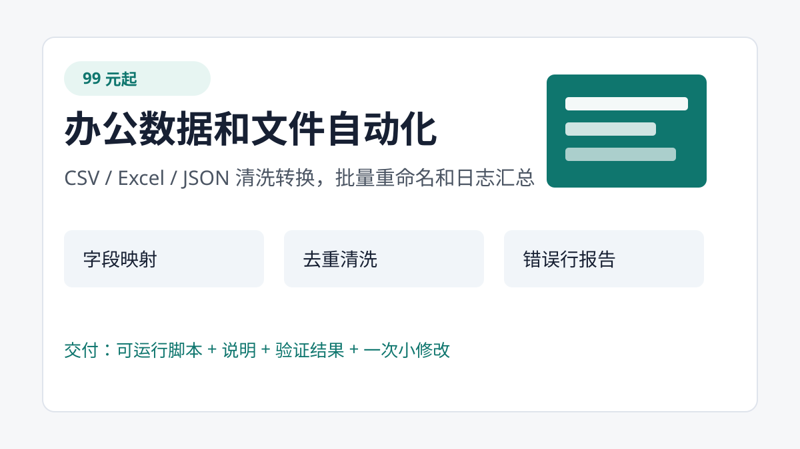
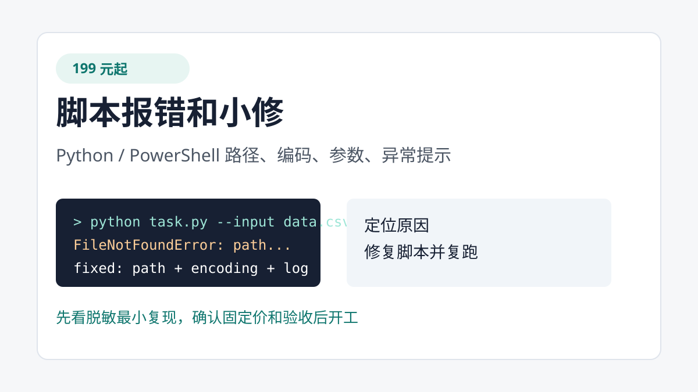
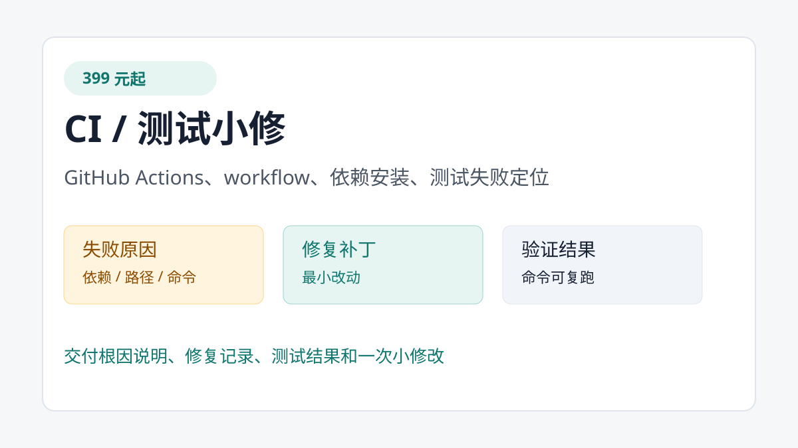

99 元起：办公数据、文件批处理、脚本和 CI 小修
只接 1-4 小时内能完成的小范围任务。先确认固定价格、验收标准、平台托管或定金，再开工。
可以直接下单的范围



99 元起
办公数据和文件自动化
CSV / Excel / JSON 清洗转换、字段映射、去重、日期标准化、批量重命名、目录整理、日志汇总。
199 元起
脚本报错和小修
Python / PowerShell 运行报错、路径编码问题、参数补充、异常提示、简单日志增强。
399 元起
CI / 测试小修
GitHub Actions 失败、小范围单元测试失败、依赖安装顺序、测试命令和根因说明。
咨询时请直接发这 6 项
- 输入样例是什么；
- 期望输出是什么；
- 当前报错、日志或卡点；
- 是否接受固定价；
- 是否可使用平台托管或先付定金；
- 期望截止时间。
可以通过你看到这条服务帖的平台私信联系。请不要公开发送真实客户数据、账号密码或隐私材料。
如果你有 GitHub 账号，也可以点击页面顶部“提交脱敏需求”，按表单填写最小复现和验收标准。
交付和验收
- 交付可运行脚本、小补丁或配置修改。
- 附运行命令、使用说明和验证结果。
- 用客户提供的脱敏样例复跑，输出符合约定即验收。
- 默认包含一次原范围内的小修改。
- 新增功能、换数据结构、扩大范围需要重新报价。
案例 1：CSV/Excel 清洗工具
问题
订单 CSV 字段名不统一，日期格式混乱，存在重复订单和错误金额。
输入
input_orders.csv 和 mapping.json。
输出
out/clean_orders.csv 与 out/error_rows.csv。
运行命令
python clean_data.py --input input_orders.csv --mapping mapping.json --output out/clean_orders.csv --errors out/error_rows.csv python test_clean_data.py
测试结果
clean_rows=3 error_rows=2 csv_excel_cleaning tests passed
案例 2：批量文件整理工具
问题
一批图片和文档文件名混乱，需要预览、分类、批量重命名，并能检查冲突。
输出
按扩展名分类后的目录、统一命名文件和 undo_manifest.csv。
运行命令
powershell -NoProfile -ExecutionPolicy Bypass -File .\organize_files.ps1 -InputDir .\fixture -OutputDir .\out -DryRun powershell -NoProfile -ExecutionPolicy Bypass -File .\test_organize_files.ps1
测试结果
batch_file_organizer tests passed
案例 3：GitHub Actions 修复
问题
workflow 没有正确安装测试依赖，导致 CI 无法稳定运行。
输出
根因说明、修复后的 workflow 思路和本地测试记录。
运行命令
python -m unittest discover -s tests
测试结果
.. ---------------------------------------------------------------------- Ran 2 tests in 0.000s OK
不承接
不接完整网站、App、小程序、全栈开发、Web3、钱包、交易、安全测试、逆向、漏洞利用、爬取私人数据、生产密码、远程控制生产电脑、代写论文、考试作弊或无限修改。
案例均使用虚构或公开测试数据，不代表真实客户。